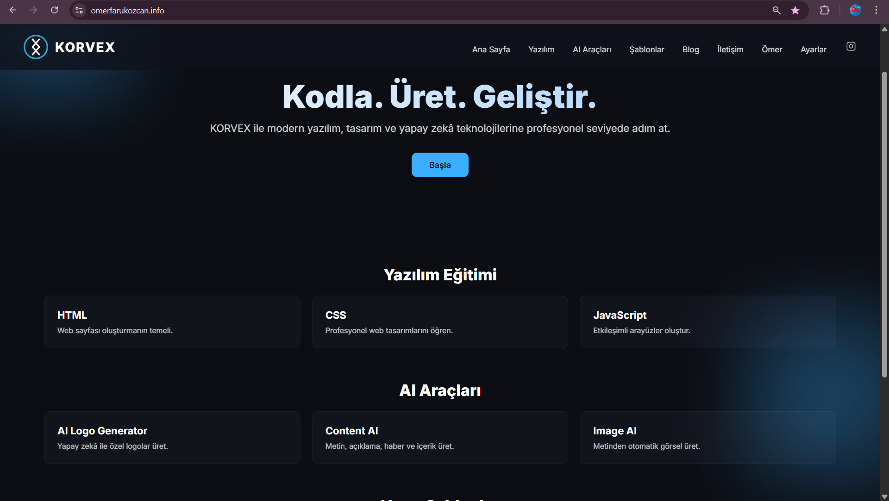
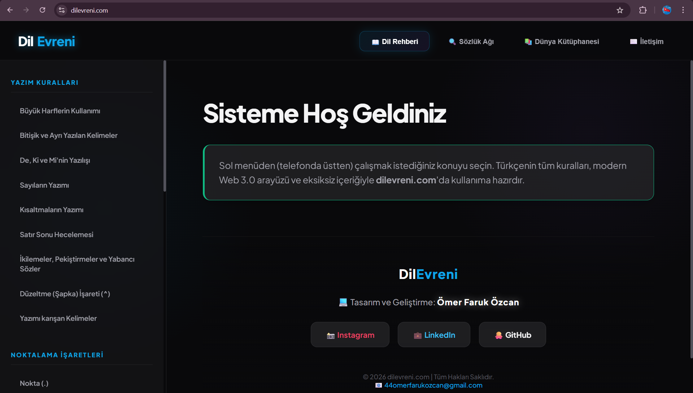
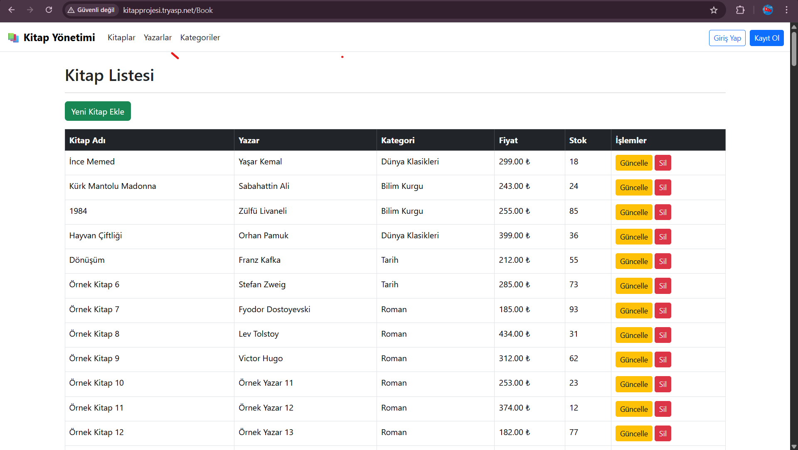

Akademik altyapımı Korvex markası altında profesyonel projelere dönüştüren bir yazılım geliştiricisiyim. Samsun Üniversitesi'nde devam eden akademik eğitimimi; sahalardan, imalat atölyelerinden ve spor kulüplerinden aldığım üst düzey disiplinle harmanlıyorum. Hem dijital ürün mimarisinde hem de operasyonel süreçlerde sorumluluk alıyorum.
Name: Ömer Faruk Özcan
Status: Samsun Üniv. Yazılım Geliştirme (2025)
Location: Samsun, Türkiye
GitHub: 44omerfarukozcan-del
LinkedIn: omerozcn00
Terminal _
NVIDIA RTX 5060 donanım gücü altyapısı kullanılarak uluslararası portföydeki müşterilere yüksek performanslı işlem yönetimi sağlandı. Sistem optimizasyon süreçleri, render işlemleri ve ileri seviye teknik destek operasyonları global standartlarda yürütüldü.
Açıkhava reklamcılığı ve kurumsal kimlik çalışmaları yürüten reklam atölyesinde üretim sürecine aktif olarak katılım sağlandı. Kurumsal tabela imalatı, dijital baskı/reklam materyallerinin teknik hazırlığı ve bu ürünlerin zorlu saha şartlarında fiziki montaj/kurulum operasyonları bizzat yürütüldü. Mühendislik ve el işçiliği gerektiren alanlarda mekanik disiplin kazanıldı.
Hizmet sektörünün dinamik ve yoğun temposu altında kriz yönetimi, müşteri şikayetlerinin çözümü ve sipariş/servis operasyonlarının eksiksiz yürütülmesi sağlandı. Takım çalışmasına uyum ve yüksek baskı altında hızlı inisiyatif alma becerileri geliştirildi.

Yazılım dünyasındaki kurumsal yüzüm ve teknoloji üssüm. Modern web mimarilerini, sunucu taraflı operasyonları ve "clean code" prensiplerini tek çatıda topladığım ana merkez. .NET Core N-Tier katmanlı mimarisi üzerine kurulu sistem, %99.9 uptime hedefiyle global hizmet ağı sağlamaktadır.

Dil ve kültür üzerine kurulu devasa bir keşif istasyonu. Kullanıcıların aradıkları kavramlara doğrudan ulaşmasını sağlayan "Dinamik Kod Sistemi" (500+ Kod) ile çalışır. ASP.NET MVC altyapısı ve SQL Server (1200+ Kayıt, 25+ Kategori) veritabanı ile geliştirilmiş, ilişkisel veri yönetimine dayanan kompleks bir platformdur.

C# ve ASP.NET Core MVC kullanılarak geliştirilmiş, yazarların ve kitapların ilişkisel veritabanı mimarisiyle yönetildiği yönetim otomasyonu. Entity Framework Code-First yaklaşımı ile verilerin dinamik olarak eklendiği ve listelendiği CRUD operasyonlarını içeren sağlam bir altyapı.
Modern web mimarileri, veri yapıları ve yazılım mühendisliği disiplinleri üzerine aktif akademik eğitim.
Askeri disiplin, kriz yönetimi ve stratejik vizyon doğrultusunda fiziksel ve mental hazırlık.
Analitik düşünce ve problem çözme yeteneği gerektiren sınavlarda yüksek başarı odağı.
Kamusal alanda teknik yetkinliği belgeleme ve mühendislik kadrosunda memuriyet.
Korvex mimarisi üzerine inşa edilmiş kendi yazılım şirketimi kurup uluslararası pazara açılmak.
Masa başındaki mühendislik yeteneğimin temeli; sahalarda, kulüplerde ve bireysel idmanlarda kazandığım rekabetçi ruh, takım çalışması ve yüksek odaklanma becerilerine dayanır.
Ortaokul döneminde kazanılan şampiyonluk. Harita okuma, yön bulma, fiziksel kondisyon ve kriz anında stratejik karar verme yeteneği.
11. Sınıf öğrencisiyken Eğitim Bilimleri Anadolu Lisesi takımıyla kazanılan ilçe derecesi. Saha içi liderlik ve takım koordinasyonu.
Haber Bağlantısı →